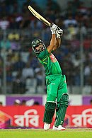

Mashrafe Mortaza
From Wikipedia, the free encyclopedia
Mashrafe Bin Mortaza (Bengali: মাশরাফি বিন মর্তুজা About this soundpronunciation (help·info); born 5 October 1983) is a Bangladeshi international cricketer and politician who is the former captain in all three formats of the game (Test, Twenty20 and One Day Internationals) for the Bangladesh national cricket team and member of the parliament Jatiya Sangsad from Narail-2. He was ranked as one of the world's most famous athletes by ESPN WORLD FAME 100 in 2019.[8][9] He became only the fifth bowler in the history to take 100 ODI wickets as a captain.[10][11] He is the most successful captain of Bangladesh in ODI and T20I. He is also considered as the best captain of Bangladesh in ODI and T20I. He is the first pace bowler in the Bangladesh cricket history who bowled the quickest delivery clocking 148 km/h during a Test against New Zealand at Hamilton in 2001.[12][13] He broke into the national side in late 2001 against Zimbabwe and represented Bangladesh before having played a single first-class match. Mortaza captained his country in one Test and seven One Day Internationals (ODIs) between 2009 and 2010, however injury meant he was in and out of the side and Shakib Al Hasan was appointed captain in Mortaza's absence. Mortaza used to be considered one of the fastest bowlers produced by Bangladesh, previously bowling in the mid-145s-148s km/h in the 2000s,[12][13][14] and regularly opens the bowling. He is a useful lower-middle order batsman, with a first-class century and three Test half centuries to his name. Mortaza's career has been hampered by fifteen injuries and he has undergone a total of ten operations on his knees and ankles.[15]
Mortaza took temporary exemption from Test cricket in 2009 due to continuous back injuries for indefinite time and have not played any test match since[16] but continued to play in shorter formats. On 4 April 2017, he announced his intentions to retire from T20Is. He retired from all T20Is on 6 April 2017.[17] In December 2018, during Bangladesh's series against the West Indies, Mortaza played in his 200th ODI match. This includes two matches for the Asia XI team.[18] In the same series, he became the first cricketer to play 200 ODIs for Bangladesh[19] and set the record of captaining Bangladesh in most number of ODIs with seventy matches surpassing Habibul Bashar.[19] In March 2020, Mortaza became the first pace bowler and third player for Bangladesh to take 700 wickets in the professional career after Abdur Razzak and Shakib Al Hasan.[20][21][22]
On 4 January 2021, for the first time, Mashrafe Bin Mortaza was dropped from the ODI squad since he made his debut in November 2001. He missed a lot of cricket over the years because of injuries but was never dropped from the team for off form.[23]
Although he had never been involved in politics during his cricket career, Mortaza collected an MP nomination form for 2018 Bangladeshi general election on 11 November 2018 under Awami League's banner.[24] In December 2018, he won a seat in parliament, with 96% of the votes in his constituency, Narail-2.[25] On 20 June 2020, he was reportedly tested positive for COVID-19 and had been kept quarantined at his residence in Dhaka.[26][27][28] On 14 July 2020, he tested negative for COVID-19.[29][30][31]

Mashrafe Mortaza
Career
Emergence
Mortaza is one of the most successful pace bowlers to have emerged from Bangladesh. The pace and aggression Mortaza displayed as an under-19 player impressed Andy Roberts, the former West Indian fast bowler, who was acting as a temporary bowling coach for Bangladesh.[2] Under Roberts' recommendation, Mortaza was drafted into the Bangladesh A team.[52]
Mortaza appeals for a wicket during the 2015 ICC Cricket World Cup match
After one match for Bangladesh A (to date his only Bangladesh A match), Mortaza made his Test debut on 8 November 2001 against Zimbabwe in the Bangabandhu National Stadium in Dhaka. Khaled Mahmud also debuted in the match, which was curtailed by rain and ended in a draw. Mortaza opened the bowling with Mohammad Manjural Islam and took 4 wickets for 106 runs (also written as 4/106) as Zimbabwe did not bat a second time. His first, also known as "maiden", Test wicket was that of Grant Flower.[53] Unusually the match was also Mortaza's maiden first-class match;[49] he was the 31st person to have achieved this, and the third since 1899.[54] Mortaza also made his first appearance for Bangladesh's one day team on 23 November 2001 along with fellow debutants Fahim Muntasir and Tushar Imran. Opening the bowling with Mohammad Sharif, Mortaza finished with figures of 2/26 from 8.2 overs as Zimbabwe won the match by five wickets.[55]
Injury problems
After the Test series against Zimbabwe and one against New Zealand, Mortaza missed the series against Pakistan in January 2002 as he was suffering from a back injury. While recovering, Mortaza suffered a knee injury while skipping and required an operation. As a result, he was unable to play cricket for a further eight months. At this stage of his career, Mortaza had played four Tests and taken 12 wickets at an average of 31.16.[56]
Mortaza did not return to international cricket until the 2003 World Cup in South Africa during 2003. Bangladesh failed to progress past the round-robin stage,[57] and Mortaza played in two matches collecting two wickets at an average of 38.00.[58][59]
In October and November 2003, England toured Bangladesh for two-Tests and three ODIs.[60] In the second Test, Mortaza took what at the time was his best Test figures of 4/60[61] before succumbing to injury, collapsing with a twisted knee after delivering the ball.[62] Despite challenging England in the series, Bangladesh lost 2–0,[63] Mortaza finished the series with 8 wickets at an average of 21.25.[64] As a result, he was again out of international cricket; this time for over a year. Injuries in the first three years of his international career saw Mortaza only play 12 Tests and not more than four in a row.[65]
Success
Mortaza returned from his career threatening injury and, after impressing in Bangladesh domestic cricket, he was selected in the 13-man squad to face India in a home two-Test series during December 2004.[66] He announced his return to Test cricket in the first Test at Dhaka by dismissing Rahul Dravid. He bowled consistently in the series and nearly dismissed Sachin Tendulkar and Sourav Ganguly, but catches were dropped.[65] Cricinfo noted that in the second Test he "toiled manfully again with wretched back-up".[67] Mortaza finished the series with five wickets at an average of 37.00, although Bangladesh lost 2–0.[68] In the following ODI series, Mortaza played an instrumental role in Bangladesh's 16 run defeat of India in the second ODI on 26 December 2004. He was awarded the man of the match for his all-round performance—taking two wickets, two catches and scoring 31 not out. The match was Bangladesh's 100th ODI and Mortaza's first one-day cricket in 15 months.[69] Bangladesh went on to lose the series 2–1.
Mortaza become man of the match for his all round performance against England in Dhaka
In January 2005 Zimbabwe toured Bangladesh, playing two Tests and five ODIs. Bangladesh won the Test series one Test to nil, their first series victory in Test cricket. In addition, Bangladesh's victory in the first Test at the MA Aziz Stadium was their first Test win. In the final innings of the first match, Mortaza took the ninth wicket and with victory imminent he struggled to bowl the next ball and had to wipe away tears and regain his composure before starting his run up.[70] Despite a sore back in the second Test, Mortaza continued to bowl.[71] In the two Tests, Mortaza scored 93 runs at an average of 31.00 and took nine wickets at an average of 24.88.[72] In a close ODI series, Bangladesh won 3–2 after being 2–0 down,[73] Mortaza played in four matches and took four wickets at an average of 40.00.[74]
Playing for Khulna Division against Sylhet Division in March 2005, Mortaza scored his maiden first-class century. Batting at number four in his team's second innings, Mortaza scored 132 not out from 140 balls; the innings far surpassing his previous best first-class score of 70, and was named man of the match.[75]
Mortaza enhanced his reputation on Bangladesh's inaugural tour of England,[76] and was the team's leading bowler, although his team lost the two-match Test series 2–0. He was by far the most economical of the Bangladeshi bowlers, conceding on average nearly half a run less per over than the next best bowler. Mortaza finished the series with four wickets at 49.50 and was the team's leading wicket taker.[77] He consistently troubled the English batsmen, repeatedly beating the bat.[78] A ODI tri-series followed in which Bangladesh recorded their maiden win against Australia. Mortaza's bowling was important in Bangladesh's huge upset against Australia in Cardiff, removing Adam Gilchrist for a duck and conceding 33 runs from 10 overs as Bangladesh won by five wickets. At the end of the tour, Mortaza was described as "Bangladesh's solitary cutting edge", underlining how important his bowling is to the team.[79]
Mortaza was selected as a reserve player for the Asian squad in the inaugural Afro-Asia Cup. He was later drafted into the full squad as a replacement for the unavailable Rana Naved-ul-Hasan. With batsman Mohammad Ashraful, he was one of two Bangladeshi players in the 15-man squad. Sultan Rana, the Asia team manager, described Mortaza as "a very promising prospect, a terrific asset to the Bangladesh team".[76] He played two of the three ODIs where he took Shaun Pollock's wicket in the first one.[80]
Further injury
In September 2005 a back injury meant that Mortaza had to return home from Bangladesh's tour of Sri Lanka before the start of the first Test. It was the sixth time he had been sent home in the middle of a series. The injury—a type of stress fracture expected to take between six and twelve weeks to heal[81]—saw Mortaza unable to play any cricket for several months.[82] He returned to the Bangladesh side in February 2006 for a series of ODIs against Sri Lanka.[58]
e final ball of the match by Brendan Taylor, giving the Zimbabweans victory.[85] With Zimbabwe already winning the series 3–1, Mortaza was dropped for the final match, which Bangladesh went on to win.[86] In the four matches he played in, Mortaza took five wickets at an average of 29.20.[87] Following their defeat by Zimbabwe, Bangladesh faced Kenya in three ODIs, winning them all. Mortaza was instrumental in the second victory, coming in with the score on 120/7 chasing 185 to win. He guided his team home with a 43 not out, farming the strike to protect the Bangladesh tail.[88] Mortaza took career best bowling figures of 6/26 from his 10 overs in the final ODI, ensuring Bangladesh were chasing a low target.[89] His figures are also the best in ODIs by any Bangladesh cricketer.[90] In the calendar year of 2006 Mortaza was the world's highest wicket taker in ODIs, collecting 49 wickets. The haul was the most ever in a calendar year by a Bangladeshi, and 17th most for anyone.[91]
IIn July and August 2006, Bangladesh toured Zimbabwe for a five-match ODI series. In the 3rd ODI, Mortaza was hit for six off thAustralia visited Bangladesh in April 2006 and Mortaza played the whole series. Despite coming close to winning the first Test, Bangladesh ultimately lost both Tests in the series. In the final innings of the first Test, Mortaza dropped a difficult catch off Australian captain Ricky Ponting who went on to see his side to victory with 118 not out. Habibul Bashar, the Bangladesh captain, said of the dropped catch, "If he had taken it we could have seen a different situation, but I must say he tried hard and you all know that he is a whole-hearted cricketer".[83] Bangladesh lost the following three-match ODI series 3–0.[84]
n a freak accident shortly before the 2006 ICC Champions Trophy, Mortaza sprained his ankle on the stairs at home. As a result, he was ruled out of the warm up matches before the tournament which was held on October.[92] Mortaza recovered in time to play in all three of Bangladesh's matches, taking two wickets at 50.50, as Bangladesh failed to progress beyond the first round.[93]
National captain
In early 2009, Ashraful's position as captain came under scrutiny and the BCB considered possible replacements. Mortaza, wicket-keeper Mushfiqur Rahim, and all-rounder Shakib Al Hasan were identified as potential successors, but the board decided to let Ashraful remain as captain. Mortaza was also reconfirmed as vice-captain.[132] Following Bangladesh's early exit from the 2009 ICC World Twenty20, as a result of their defeat by Ireland, Mohammad Ashfraful's leadership was criticised, but stated that he wished to remain captain.[133] In June 2009, the BCB relieved Ashraful of the captaincy so that he could focus on his batting and Mortaza was appointed captain for the tours of the West Indies and Zimbabwe. Shakib Al Hasan replaced Mortaza as vice-captain.[134]
In July 2009, Bangladesh toured the West Indies. Mortaza's captaincy was off to a winning start in his first Test in charge when Bangladesh beat the West Indies. However, he injured his knee and was unable to take to the field on the final day, leaving Shakib Al Hasan to assume the captaincy and lead the team to a historic win; it was their first against the West Indies, their first overseas Test victory, and only their second Test win.[135] This was achieved against a very inexperienced West Indies side as a result of a dispute between the West Indies Cricket Board and the West Indies Players' Association over pay. The first XI had made themselves unavailable for selection and a new squad had to be chosen. Seven West Indies players made their Test debut in the match and the side was captained by Floyd Reifer who had played the last of his four Tests ten years earlier.[136]
Mortaza's injury prevented him from taking part in the remainder of the tour and his replacement, Shakib Al Hasan, led Bangladesh to a 2–0 and 3–0 victories in the Test and ODI series respectively. The West Indies' dispute remained unsolved for the rest of Bangladesh's tour and the West Indies continued to field an inexperienced side. The knee injury also ruled Mortaza out of playing on the tour of Zimbabwe in August.[137][138] In early August, Mortaza travelled to Australia to undergo arthroscopic surgery on both knees; the expected recovery time from the operation was six weeks.[139][140] Although Mortaza was reinstated as Bangladesh's captain for the team's home ODI series against Zimbabwe in October 2009,[141] he did not play in the series. His injury persisted, and he did not play competitive cricket from his injury in July 2009 until February 2010.
In March 2020, when Zimbabwe toured Bangladesh, prior to the third and final ODI, Mortaza confirmed that he would be stepping down as Bangladesh's ODI captain after the series.[142] Bangladesh won the ODI series 3–0, with Mortaza recording his 50th win in an ODI match as captain with victory in the third match.[143]
Mortaza's record as captain
| Format |
Matches |
Won |
Lost |
Drawn/NR |
| Test |
1 |
1 |
0 |
0 |
| ODI |
88 |
50 |
36 |
2 |
| T20 |
28 |
10 |
17 |
1 |
Last updated on: 6 March 2020
Playing style

Mortaza plays a shot against England in Mirpur
Pitches in Bangladesh are generally slow and suit spin bowling; the domestic circuit is dominated by spin bowlers and former Bangladesh coach Jamie Siddons suggested the pitches discourages the emergence of fast bowlers.[182] Despite this in April 2008 Mortaza became the second Bangladesh bowler to take 100 wickets in ODIs and the first fast bowler from the team to pass the landmark.[183] For a long time Mortaza was acclaimed as the fastest bowler that Bangladesh had produced, before the arrival of Rubel Hossain.[184]
Mortaza uses his aggressive bowling to challenge batsmen.[56] Although a naturally aggressive player, his accurate bowling has led to comparisons with Australian fast-bowler Glenn McGrath.[65] He has been described by commentators as having "a strong sturdy physic ... sheer pace and stamina with an aggressive frame of mind".[52] After his knee injury, Mortaza was forced to alter his bowling action slightly, and lost some pace. He has tried to develop his use of reverse swing in an attempt to become a more effective bowler.[103]
Jamie Siddons, the Bangladesh coach, has stated that he believes Mortaza does not get the bowling figures he deserves because "opposing teams tend to see him off and then attack the others".[185] Mortaza has also commented that "it always puts pressure on the bowlers when their side is bowled out cheaply in the first innings", something that the Bangladesh batting line-up has sometimes struggled with.[103]
Although primarily a bowler, Mortaza is an aggressive batsman as demonstrated by his high Test match strike rate of 67.25. He holds Bangladeshi records for highest strike rate in Tests and ODIs, and for scoring the most runs in an ODI over (26 runs including four sixes).[186][187] Mortaza's batting is characterised by a reluctance to get in line with the bowling and he prefers to take a step towards square leg to facilitate his powerful shots.[188] He has suffered a plethora of injuries, in his own words from 2007: "Left knee, three operations; right knee, one operation; back, stress fracture—it's better now but still gives some trouble—some shoulder problems; ankles, damaged ligaments twice".[184] Since then he has suffered further injury, and in total has undergone four surgeries on his left knee and three on his right, and three on his ankles.[176]